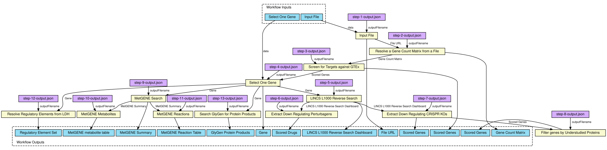

The input to this workflow is a data matrix of gene expression that was collected from a pediatric patient tumor patient from the KidsFirst Common Fund program [1]. The RNA-seq samples are the columns of the matrix, and the rows are the raw expression gene count for all human coding genes (Table 1). This data matrix is fed into TargetRanger [2] to screen for targets which are highly expressed in the tumor but lowly expressed across most healthy human tissues based on gene expression data collected from postmortem patients with RNA-seq by the GTEx Common Fund program [3]. Based on this analysis the gene IMP U3 small nucleolar ribonucleoprotein 3 (IMP3) was selected because it was the top candidate returned from the TargetRanger analysis (Tables 2-3). IMP3 is also commonly called insulin-like growth factor 2 mRNA-binding protein 3 (IGF2BP3). Next, we leverage unique knowledge from various other Common Fund programs to examine various functions and knowledge related to IMP3. First, we queried the LINCS L1000 data [4] from the LINCS program [5] converted into RNA-seq-like LINCS L1000 Signatures [6] using the SigCom LINCS API [7] to identify mimicker or reverser small molecules that maximally impact the expression of IMP3 in human cell lines (Fig. 1, Table 4). In addition, we also queried the LINCS L1000 data to identify single gene CRISPR knockouts that down-regulate the expression of IMP3 (Fig. 1, Table 5). These potential drug targets were filtered using the Common Fund IDG program's list of understudied proteins [8] to produce a set of additional targets (Table 6). Next, IMP3 was searched for knowledge provided by the with the Metabolomics Workbench MetGENE tool [9]. MetGENE aggregates knowledge about pathways, reactions, metabolites, and studies from the Metabolomics Workbench Common Fund supported resource [10]. The Metabolomics Workbench was searched to find associated metabolites linked to IMP3 [10]. Furthermore, we leveraged the Linked Data Hub API [11] to list knowledge about regulatory elements associated with IMP3 (Table 6). Finally, the GlyGen database [12] was queried to identify relevant sets of proteins that are the product of the IMP3 genes, as well as known post-translational modifications discovered on IMP3. 1. Lonsdale, J. et al. The Genotype-Tissue Expression (GTEx) project. Nature Genetics vol. 45 580–585 (2013). doi:10.1038/ng.2653 2. Evangelista, J. E. et al. SigCom LINCS: data and metadata search engine for a million gene expression signatures. Nucleic Acids Research vol. 50 W697–W709 (2022). doi:10.1093/nar/gkac328 3. IDG Understudied Proteins, https://druggablegenome.net/AboutIDGProteinList 4. MetGENE, https://sc-cfdewebdev.sdsc.edu/MetGENE/metGene.php 5. The Metabolomics Workbench, https://www.metabolomicsworkbench.org/ 6. Linked Data Hub, https://ldh.genome.network/cfde/ldh/ 7. York, W. S. et al. GlyGen: Computational and Informatics Resources for Glycoscience. Glycobiology vol. 30 72–73 (2019). doi:10.1093/glycob/cwz080
{kind=link}